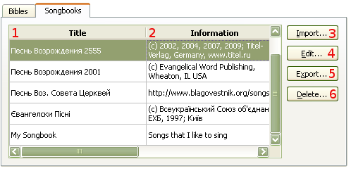
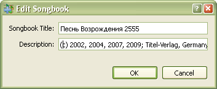

4.2 Managing Songbooks
To manage songbooks:
This will open a dialog where managing will take place. Shortcut: Crtl+M
softProjector allows you to have as many songbooks as you would like to
have and it allows you to import, edit, export or delete a songbook.

Title column displays all title of songbooks are in the database of the program.
A short description of each songbook
This will import a songbook.
A dialog box will appear where you can change the title and
infromation of the songbook.

Export a songbook from the database that you want to share with someone else.
Also, it is highly recommended to save a copy of your songbooks before
updating program.
Delete a songbook that you do not want to use any more. You will not be allowed to delete any more songbooks if only one songbook is left.